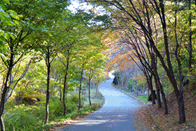

-
붉게 물들어가는겨울의 강원도 해맞이 명소
떠오르는 해에게 소원 한 점 보내다. 강원도 해맞이 명소 여행떠오르는 태양에게 소원을 말해봐~추운 겨울, 잊지 못할 추억이 되어줄 해맞이 여행 어떠세요?간절히 바라면 이루어지듯, 붉게 물들어가며 떠오르는 ...
-
온 세상이 하얀 겨울의강원도 스키장
하얀 겨울을 만나다강원도 스키장 정보기다리고 기다리던 겨울이 돌아왔습니다. ‘겨울’하면 떠오르는 스키장!겨울에만 만나볼 수 있기에 더욱 기대되는 강원도 스키장을 소개합니다. 짜릿하고 즐거운 스키를 타...
-
보면 볼수록 똑똑해지는박물관 여행
여유로운 가을, 알찬 지식을 찾아 떠나는 박물관 여행나들이 하기 좋은 계절 가을입니다.청명한 하늘, 사랑하는 아이들과 함께 역사 박물관, 자연 박물관, 이색박물관은 어떠세요?다 함께 강원도 박물관으로 떠나...
-
천고마비의 계절가을에 떠나는 단풍명소
가을의 정취를 느낄 수 있는 단풍명소 여행단풍은 가을과 떼려야 뗄 수 없습니다.알록달록 붉고 노랗게 물든 가을의 색은 언제나 아름답습니다.선선한 가을, 단풍명소로의 여행을 떠나요.강원도 단풍명소 춘...
-

푸른 바다를 달리다물 따라서 해변 여행
따사로운 태양 아래 푸른 바다를 달리다, 물 따라서 해변 여행 동해바다로 떠나는 시원한 해변여행강원도에 찾아온 뜨거운 태양.푸른 바다, 철썩이는 파도, 그리고 사랑하는 사람들과 함께라면 더할나위 없는 시...
-
 자연 속에서 건강을 숨쉬는자연휴양림 여행
강원도에서 보내는 여름이야기건강을 찾아 떠나는 자연휴양림 여행자연 속에서 건강을 숨쉬는 자연휴양림 여행자연과 함께하는 강원도입니다. 무더운 여름, 지친 심신을 아름다운 자연 속에서 힐링하는 여유로운 ...